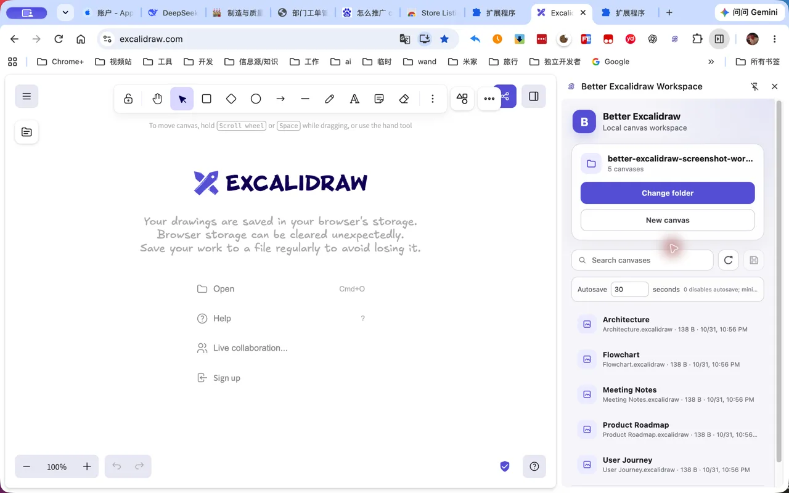
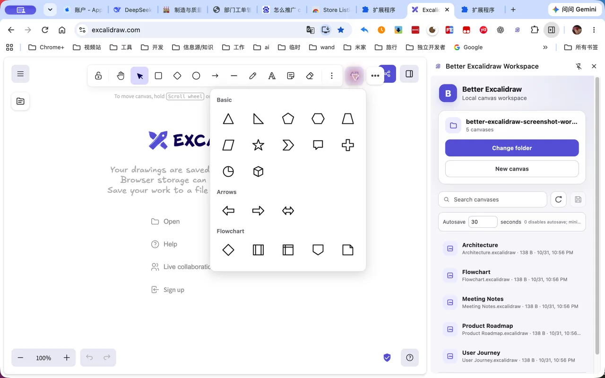
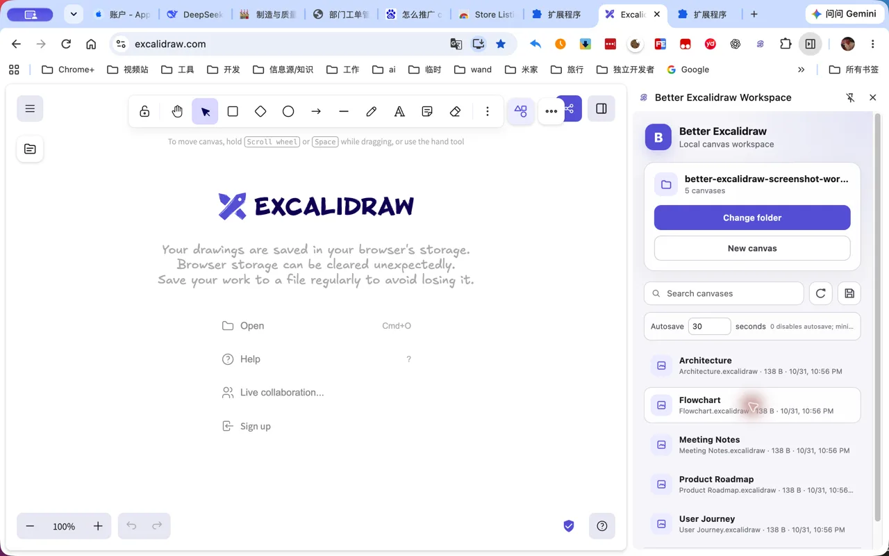

Local project workspace
Choose a folder and browse every .excalidraw file, including files inside subfolders.
v0.7.0 · Free & open source · Updated 2026-11-17
Open a local folder, switch between canvases, auto-save your work, and draw more native-style shapes—without leaving the official Excalidraw website.
Built for people who want Excalidraw's simplicity with practical local project management.
Choose a folder and browse every .excalidraw file, including files inside subfolders.
Save before switching canvases, save manually, or choose an automatic save interval that fits your workflow.
Draw polygons, stars, flowchart decisions, arrows, speech bubbles and more with click-and-drag placement.
Actual screenshots of the extension running in Chrome's side panel on the official excalidraw.com.



Add it from the Chrome Web Store, or build it from source for full control.
https://excalidraw.com/.pnpm install.pnpm build to generate the dist/ folder.chrome://extensions/ and enable Developer mode.dist/ directory.Exactly what the extension can access, and where it runs.
sidePanel — shows the local canvas workspace in Chrome's side panel.storage — stores local preferences such as the autosave interval and the most recently used workspace handle.https://excalidraw.com/* — the content script runs only on the official Excalidraw website.https://excalidraw.com/ site.Install the extension, open https://excalidraw.com/, open the workspace side panel, and choose a local folder. Every .excalidraw file is then read and saved directly in that folder through the browser's File System Access API—you can save manually, save before switching, or set an autosave interval.
Yes. The side panel lists every .excalidraw file in your folder (including subfolders) so you can search, switch between canvases, and create new drawings. Autosave keeps each canvas up to date as you move between them.
Yes. Version 0.7.0 is free and open source under the MIT License. Install it from the Chrome Web Store, or review the code, report issues, and contribute on GitHub.
It uses the storage permission for local preferences (such as the autosave interval) and runs its content script only on the https://excalidraw.com/ host. Your canvas files and folder access stay on your computer—nothing is uploaded to a developer server or cloud.
No. Canvas files are read and saved locally through browser-granted folder access. No account is required and nothing is uploaded to a developer server.
Google Chrome 116 or later on ChromeOS, macOS, Windows, and Linux. It is a Manifest V3 extension.
It adds a workspace button, an extended shape panel, and canvas switching only on the official excalidraw.com. No Excalidraw account or cloud service is required.
Open an issue on the GitHub issue tracker.
Your workspace files stay under your control.